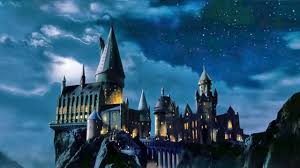
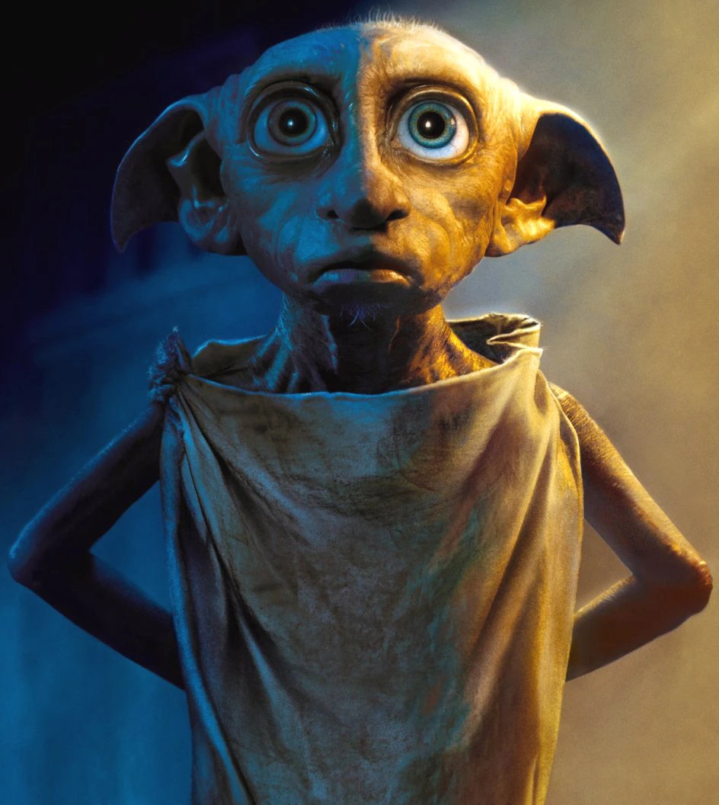
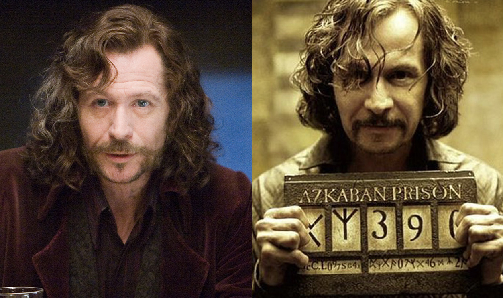
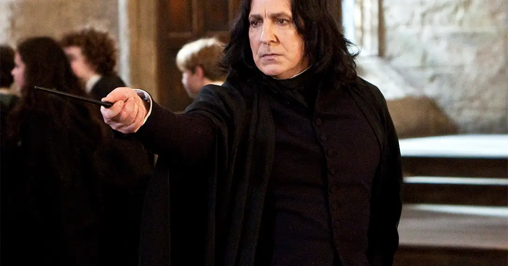
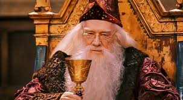

Olá, este arquivo pode conter assustos sensíveis, como:
Porém antes de começarmos aqui vai uma breve descrição dos honrados!

Dobby é um elfo doméstico que servia a família Malfoy e sofria maus-tratos constantes. Ele é libertado por Harry Potter (após ganhar uma meia (depois de quase matar ele)) e passa a viver como um elfo livre. Dobby demonstra grande lealdade e coragem, sacrificando sua vida para salvar seus amigos.

Sirius Black (melhor personagem (pior morte)) era o padrinho corajoso e divertido do Harry, sempre pronto pra proteger quem amava. Mesmo injustiçado e preso (culpa do Pettgrew), nunca perdeu o coração nem a esperança(nem o humor). Ele mostrou que amizade e lealdade valem mais que qualquer medo ou dificuldade. Sirius morreu após a bruxa Bellatrix Lestrange dar um Avada Kedavra nele.

Severus Snape era meio sombrio e rabugento, mas tinha um coração cheio de amor secreto (pela capa dele). Ele sacrificou tudo por amor a Lily e fez de tudo pra proteger Harry, mesmo sendo mal interpretado. No fim, mostra que coragem e lealdade nem sempre aparecem de maneira óbvia.

Alvo Dumbledore era o professor (e diretor) sábio e cuidadoso que sempre guiava Harry e seus amigos (e dava pontos para Grifinória). Mesmo com mistérios e segredos, ele fez de tudo para proteger Hogwarts e lutar contra o mal. Mostra que inteligência, bondade e coragem podem mudar o destino das pessoas.
Segue abaixo o link para você descobrir sua casa de Hogwarts